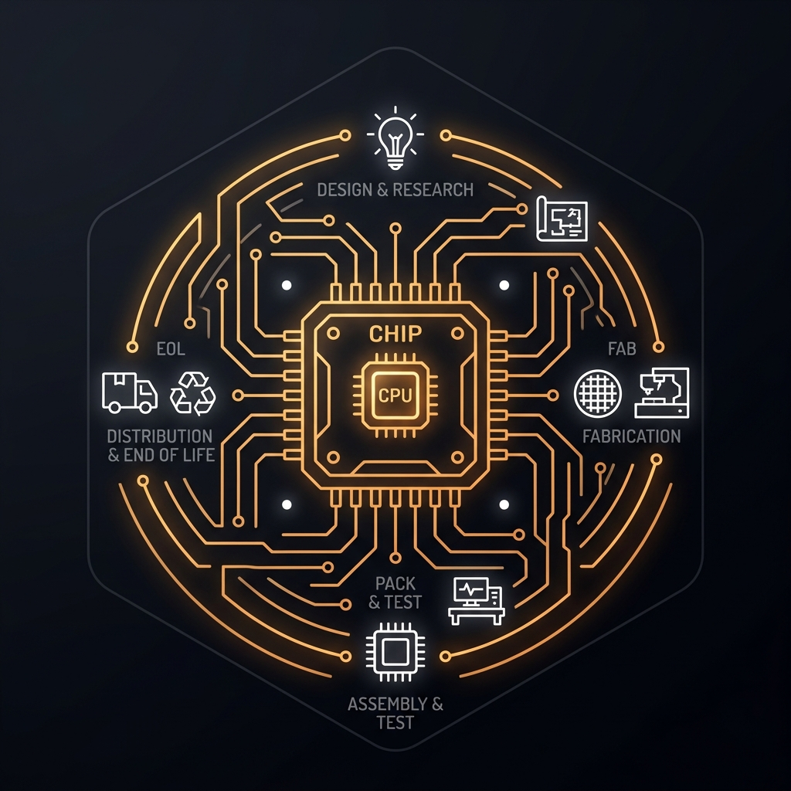
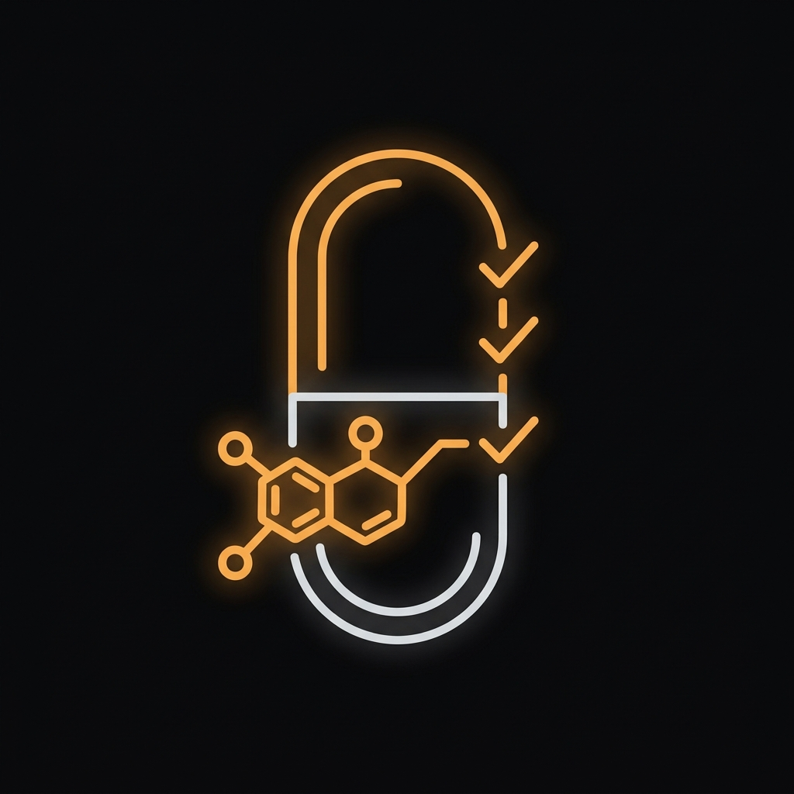
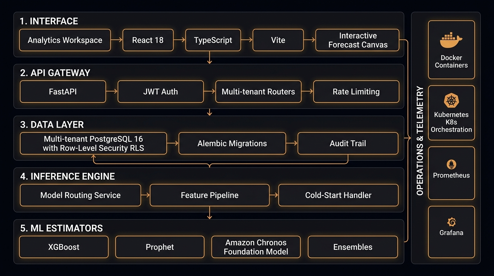
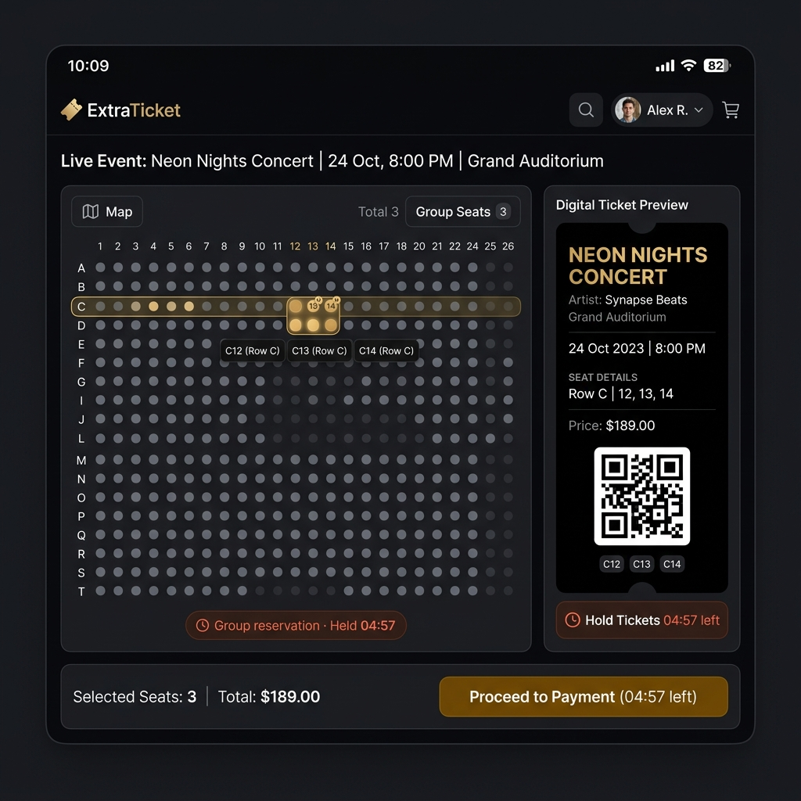
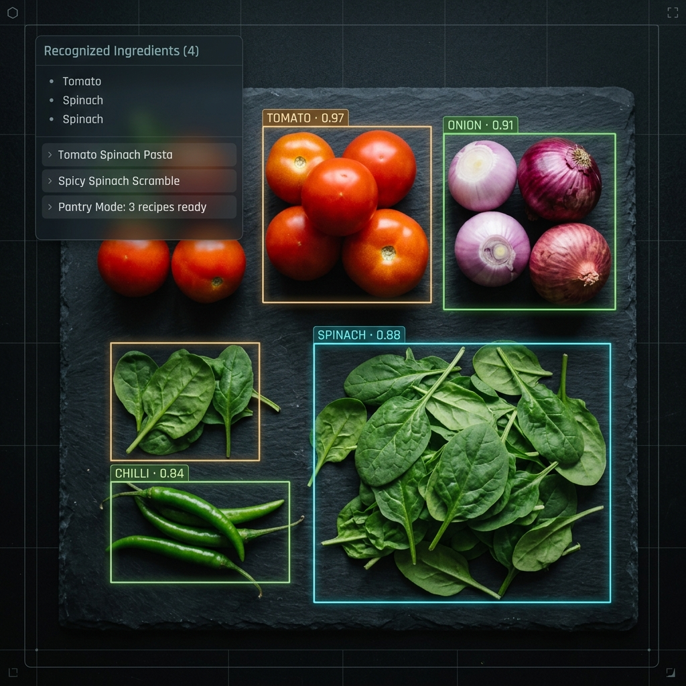

Fashion
Short lifecycles and sharp seasonal peaks, where the cost of being late is a markdown.
Seasonal velocityFounder of Sanket — a predictive intelligence platform designed to help businesses understand demand, inventory and operational risk.
Live interactive dashboard · hover to inspect weekly telemetry, switch SKUs or simulate shock test
Approach
Most operational problems are not technology problems until someone insists on making them one. I start with the decision being made badly, how often it is made, and what it costs to get wrong.
A vague operational complaint becomes a scoped product only once you decide what the system will answer, who acts on the answer, and what it deliberately refuses to do.
Schema to pixel. Data model, API, inference layer, interface. Owning the full stack is what makes it possible to move a constraint instead of designing around it.
Architecture decides what the product can eventually become; the interface decides whether anyone gets that far. Treating either as someone else's concern is how good systems end up unused.
The company
संकेत — "the signal"
Predictive intelligence for businesses that cannot afford to guess.
Businesses across industries make purchasing and inventory decisions using incomplete data, spreadsheets and fragmented forecasting systems. Capital is committed weeks or months before demand actually appears.
Estimate high and the money sits on a shelf as dead inventory. Estimate low and the demand walks to a competitor. In regulated categories, a wrong move also leaves an audit problem behind it.
Sanket forecasts demand at SKU level, ranks where inventory is about to go wrong, and turns that into purchase configurations a buyer can act on — with the reasoning visible rather than hidden behind a single score.
It is built as one platform serving several operating contexts, so a business does not have to choose between a tool that understands forecasting and a tool that understands its industry.
Platform
Portfolio health for the current season, with the decisions that need a human.
Three purchase recommendations are waiting for review. Two SKUs entered the risk queue overnight.
Recorded demand and forward projection with a confidence band that widens across the horizon.
Interval widens with horizon. Beyond week 20 the recommendation shifts from ordering quantity to reorder timing.
Where stock is about to become a problem, ranked by days of cover against projected demand.
| SKU | Site | Exposure | Days of cover | Recommended action |
|---|---|---|---|---|
| SKU-2481 | DC-North | Stockout | 6 | Expedite 1,200 units |
| SKU-1177 | DC-West | Overstock | 94 | Hold reorder, review markdown |
| SKU-8842 | DC-Central | Expiry | 11 | Reallocate batch before shelf life |
| SKU-0034 | DC-South | Thin history | — | Monitor, zero-shot forecast active |
| SKU-6620 | DC-North | Nominal | 38 | No action |
Risk is scored against the forecast, not against a static reorder point — the threshold moves as demand moves.
Every SKU is routed to the model that earns it. Products with no usable history fall back to a zero-shot foundation model.
| SKU | Description | History | Routed model | Confidence |
|---|---|---|---|---|
| SKU-2481 | Linen shirt, SS26 | 3 seasons | XGBoost | 96 |
| SKU-1177 | 27″ OLED panel | 26 months | Prophet | 93 |
| SKU-8842 | Insulin pen, 3 ml | 41 months | Ensemble | 97 |
| SKU-0034 | Drip irrigation kit | 11 days | Chronos | 81 |
Zero-shot route active — SKU-0034 has eleven days of history and still receives a forecast on day one.
Forecast accuracy and sell-through by distribution hub, so allocation follows the regions that actually convert.
Regional divergence above eight points usually means a distribution constraint, not a demand one.
One product, the drivers behind its forecast, and how much each one is contributing.
Drivers are shown because buyers override forecasts. An override made against visible reasoning is a better decision than an override made against a black box.
Product concept · illustrative interface with representative data
One platform
Short lifecycles and sharp seasonal peaks, where the cost of being late is a markdown.
Seasonal velocity
Products that ramp, plateau and end. Forecasting has to know which phase it is in.
Lifecycle-aware demand
Regulated inventory, where every change to a batch has to be traceable after the fact.
Audit-bound stockRegional and seasonal sensitivity, with new inputs arriving faster than their sales history.
Thin-history demandThe thesis
01
Purchasing decisions are made on incomplete evidence.
Buyers commit capital long before demand shows up, using history that lives in spreadsheets and systems that do not talk to each other. The decision is high-frequency, high-value, and almost entirely unassisted.
Being wrong is not symmetric. Over-ordering ties up working capital in stock that has to be discounted; under-ordering hands revenue to whoever did have the unit.
02
Forecasting fails at the edges, not the average.
Conventional forecasting assumes every product looks like the products it was tuned on: a long, clean sales history and stable seasonality. Real catalogues are mostly edges — new products, short lifecycles, regional variation, promotions, substitutions.
A single global model is therefore most accurate exactly where the decision matters least, and least accurate where it matters most.
03
Forecast the SKU, then say what to do about it.
Sanket produces demand forecasts per SKU, ranks inventory risk by days of cover against those forecasts, and recommends purchase configurations a buyer can accept, adjust or reject.
The reasoning stays visible. Buyers override forecasts — that is not a flaw to be designed out, it is the reason the interface exposes drivers instead of a single confidence score.
04
Every SKU is routed to the model that earns it.
Rather than one model for everything, a routing layer assigns each product to the approach its data supports: gradient boosting where features are rich, seasonal decomposition where the pattern is periodic, statistical ensembles where signals disagree.
When a product is too new to train on, the router falls back to a zero-shot foundation model — Amazon Chronos — so cold start is a supported path rather than an exception the customer has to work around.
05
One system serving contradictory rulebooks.
Fashion wants seasonal velocity. Electronics wants lifecycle awareness. Pharma wants audit trails and batch traceability. Agro wants regional and weather sensitivity. Each vertical is a rulebook on top of shared forecasting infrastructure, not a separate product.
Tenant separation is enforced in the database through PostgreSQL Row-Level Security, so one customer's data is invisible to another as a property of the data layer rather than a promise made by application code.
06
Five layers, each replaceable.
The platform separates what the user sees, what the API allows, what the database guarantees, and what the models decide — so any one of them can be rebuilt without taking the others down with it.

Forecasts, risk queues and purchase recommendations, over token-authenticated APIs.
React · TypeScript · ViteVertical routers, request validation and per-tenant session context.
FastAPI · JWTRow-Level Security driven by session parameters, versioned migrations, append-only audit history.
PostgreSQL 16 · SQLAlchemy · AlembicFeature assembly, per-SKU model selection, batch and on-demand scoring.
Python serviceTrained estimators for products with history, foundation-model inference for those without.
XGBoost · Prophet · Ensembles · ChronosContainerised deployment, cluster orchestration, metrics and dashboards, test coverage — reproducible from a cold clone.
Docker · Kubernetes · Prometheus · Grafana · Pytest07
Forecasting becomes decision infrastructure.
A forecast that a planner reads once a week is a report. The intent is a system an operations team runs on: procurement, replenishment and risk in one place, with the model layer improving underneath without changing how the decision gets made.
The platform architecture is deliberately vertical-agnostic, so the same infrastructure can carry additional industries as their rulebooks are added.
Selected builds
Three builds outside Sanket, each solving a problem that needed both a model and an interface.




Also live — bye-bye world, an AI task manager with live summaries, built without frameworks.
Experience
Wells Fargo
UI/UX Designer
Designed user-centric interfaces inside one of the largest financial institutions in the United States — design-system discipline at bank scale, where consistency matters more than novelty.
IKEA
Freelance UI/UX Designer
Delivered product design inside an established global design language, working to an existing system rather than around it.
Tectoro Consulting
AI/ML Developer
Built and deployed machine learning pipelines and intelligent applications for client work — the part of ML that starts after the notebook.
Operating range
01
Turning ambiguous operational problems into products with a defined scope, a defined user and a defined refusal.
02
Frontend, backend, APIs and production systems — including the parts that only matter at three in the morning.
03
Machine learning, forecasting, data pipelines and automation, with attention to what happens when a model meets real data.
04
Interfaces, information architecture and product experience — the discipline that decides whether the engineering is ever used.
05
Markets, users and product direction: what to build next, and what to deliberately leave unbuilt.
About

I care what the architecture and the kerning both look like, and I do not think that is a contradiction.
B.Tech in Computer Science and Engineering from B V Raju Institute of Technology, Narsapur. Since then I have designed interfaces inside one of America's largest banks, taken freelance product design briefs for a global furniture retailer, and built and deployed machine learning pipelines at a consulting firm.
Alongside that I taught computer science fundamentals — data cleaning, visualisation, statistical analysis and core CS — as lead tutor to more than five hundred students. Teaching is where I learned that if you cannot explain a system simply, you have not finished designing it.
Now I am building Sanket, which is the first thing I have worked on where product strategy, engineering, machine learning and design are not separate jobs handed to separate people.
Currently
Building
Exploring how forecasting, machine learning and operational data can become practical decision infrastructure for real businesses — not another dashboard.
Contact
For conversations around Sanket, technology, product, partnerships or ambitious ideas.